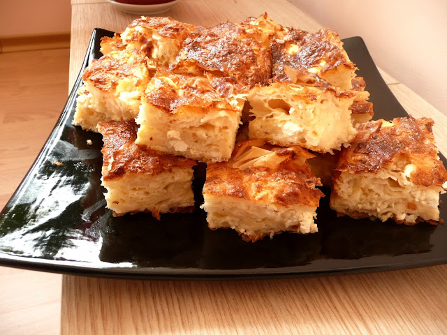

Banitsa

A delicious dish for everyone!
My aunt makes one of the best banitsas in the world. I've been trying to cook a similarly delicious banitsa as my
aunt since I was a kid
and for the last years I've been getting really close. With time I've changed the original recipe a little.
The result though is always wonderful - superb taste. For this banitsa I recieve many compliments and inquiries
about the recipe
by friends. The recipe varies a little depending on the weight of the pasetry and the avaiable products in the
fridge but overall the proportions are as follows:
Products:
- 350-400 g of pasetry
- 5-6 eggs (even if the pasetry I bought is 500 g, I still don't put more than 6 eggs)
- 400-500 g of yogurt - 2% (if the pasetry is 500 g, I must add at least 500 g of milk)
- 1 teaspoon of baking soda
- 100 ml. oil (I pour by eye from the bottle, but I guess it is about a hundred milliliters)
- 300-400 g of feta cheese
- I often add a small amount (about half a cup) of carbonated water or fresh milk,
but there is no obstacle to making the patty without them - the taste is always wonderful.
Steps:
- The eggs are scrambled in a deep bowl
- The yogurt is added to the mix and then stirr the mixture well
- Add a teaspoon of baking soda and oil to the mixture - 100-150 ml depending on the weight of the pasetry
- Stirr the mixture well again
- If you have fresh milk or sparkling water hanging around the fridge, you can pour some into the mixture
- Finally, the crushed feta cheese is added to the already mixed mixture in the bowl
- The tray is greased with oil and the pastery begins to be lined up in it - two pastery sheet are placed on the bottom of the tray, and they should be shaggy, not folded in half and cover the bottom of the dish
- The two crusts on the bottom are filled with about 1 scoop of the prepared mixture.
- Again, 2 sheet pastery are lined up and filled with mixture, and so on until the crusts and the mixture are finished
- On top of everything you should also put some of the topping mixture
- The banitsa is baked in an oven preheated to 180 degrees with a fan. It takes about half an hour to bake it - you will be guided by the beautiful golden color of the banitsa
- After taking it out of the oven, spray the banitsa with a little cold water and cover it with old newspaper and a kitchen towel on top. After five minutes, you can already cut the banitsa and serve it
Back to homepage